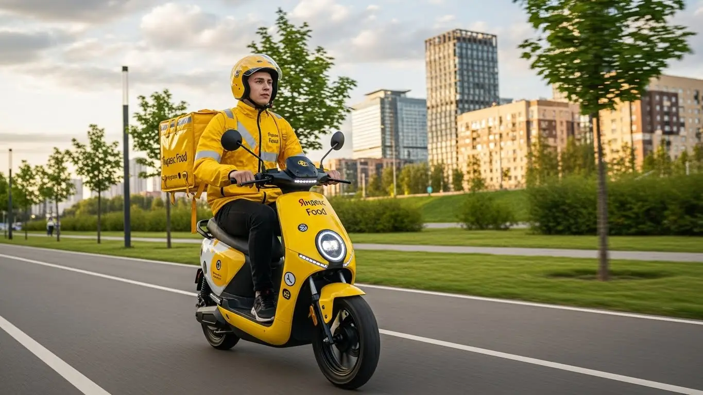
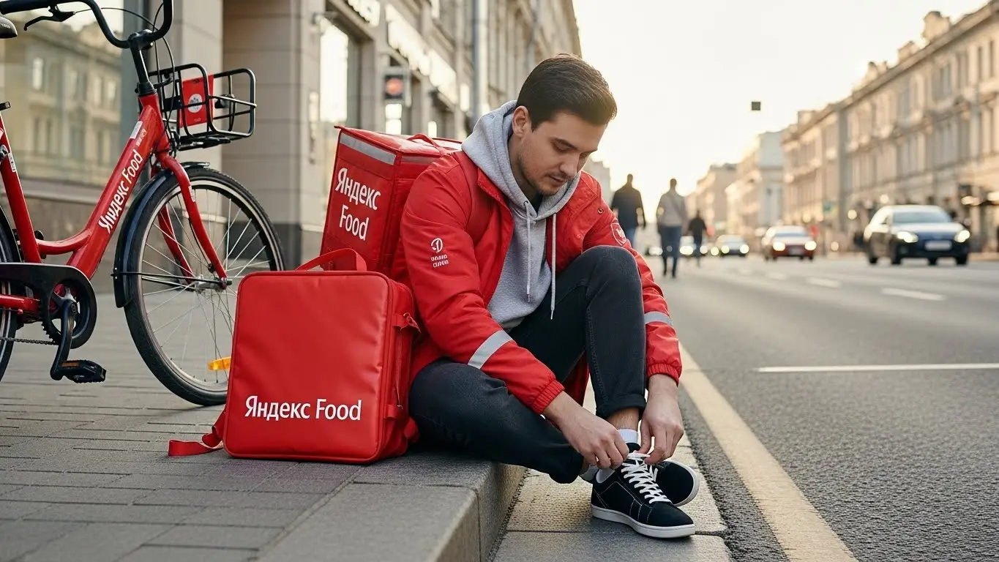
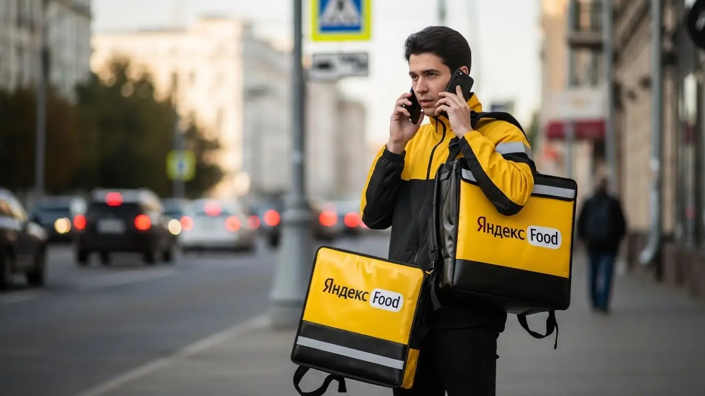
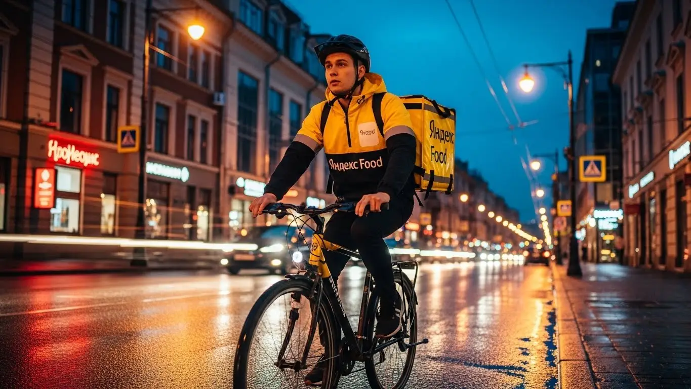
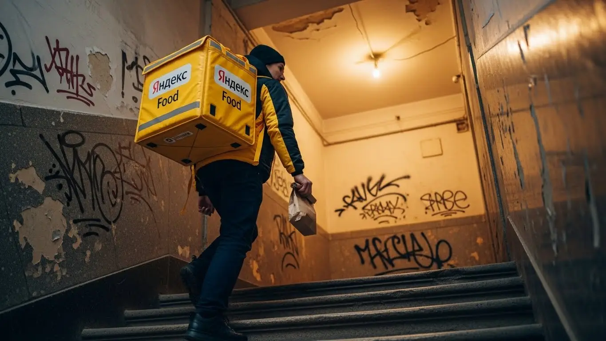

Работа курьером Яндекс Еды в Коврове: доход и условия в 2025-2026

- Работа курьером Яндекс Еды в Коврове: для кого эта вакансия и что вы получите
- Сколько вы будете зарабатывать курьером в Коврове: калькулятор дохода и разбор выплат
- Реальный заработок курьера в Коврове: смены и месячный доход
- График работы и форматы занятости
- Требования к кандидату и документы
- Самозанятость, налоги и юридическая чистота
- Пошаговое оформление и первый выход на линию в Коврове
- Пешком, на вело или на авто: что выгоднее в Коврове
- Районы, маршруты и «топовые» зоны заказов в Коврове
- Безопасность, страховка, штрафы и оплата простоя
- Плюсы и возможные минусы работы курьером в Коврове
- Реальные истории и отзывы курьеров из Коврова
- Ответы на главные вопросы о работе курьером Яндекс Еды в Коврове
- Короткие ответы на главные вопросы
- Итоги и ваш следующий шаг
Все города
Думаешь гонять курьером по Коврову — легкие деньги? Взял сумку, сел на велик или в машину и поехал зарабатывать? Постой. А ты не боишься, что убьешь подвеску на наших дорогах, застрянешь в пробке на проспекте Ленина в час пик, а в итоге получишь копейки после вычета всех расходов и налога? Забудь про рекламные обещания. Здесь мы говорим про реальную работу курьером Яндекс Еда в Коврове, с нашими клиентами, трафиком и непредсказуемой погодой.
Поверь, 9 из 10 новичков в Коврове наступают на одни и те же грабли. Они не считают расходы на бензин, налог самозанятого и амортизацию. Не понимают, почему в центре заказы сыплются, а в спальных районах можно час простоять впустую. Не знают, как работает система приоритета и почему одним дают выгодные заказы, а другим — нет. В итоге — разочарование, пустой кошелек и ощущение, что тебя обманули. Чтобы избежать этого, стоит заранее изучить все детали. Кстати, подробные условия, калькулятор дохода и форма для быстрой заявки собраны на специальной странице про работу курьером Яндекс Еда в Коврове.
В этом гиде я без воды и рекламной шелухи разложу всё по полочкам. Мы честно посчитаем, сколько чистыми выходит у пешего, вело- и автокурьера в Коврове. Разберём лучшие районы и часы для работы, где реально есть спрос. Выясним, как погода и сезоны влияют на доход и как не остаться без заказов зимой. Я покажу на примерах, за что прилетают штрафы и как их избежать, и стоит ли вообще смотреть в сторону конкурентов в нашем городе.
Меня зовут Алексей. Я сам не один год откатал с желтой сумкой по Коврову, а сейчас у меня свой небольшой таксопарк-партнёр. Так что я вижу всю эту кухню изнутри — и со стороны водителя, и со стороны цифр в системе. Я не буду тебе ничего «продавать», моя задача — дать честную картину, чтобы ты принял правильное решение. Хватит теории. Поехали разбираться, как на самом деле устроена работа в Яндекс Еде именно в нашем городе.
Прежде чем нырять в детали, вот короткий гид по главным темам статьи — поможет быстро сориентироваться.
Что ты точно узнаешь из этого разбора (без воды)
В этой статье ты ТОЧНО узнаешь:
- Сколько РЕАЛЬНО можно заработать в Коврове за смену на машине, велике или пешком?
- В каких районах Коврова больше всего заказов и как ловить «фиолетовые зоны» с повышенной оплатой?
- За что на самом деле снижают рейтинг или штрафуют, и как этого избежать?
- Что такое самозанятость, сложно ли её оформить и сколько налогов придётся платить?
- Как правильно выбирать слоты и тип доставки (пеший, вело, авто), чтобы не работать впустую?
- Что такое оплата простоя и как работает страховка, если что-то случится на смене?
А если тебе некогда читать всю статью — переходи сразу к заключению, где ты найдёшь короткие ответы на все эти вопросы и указания, в каких разделах искать подробности.
А чтобы сразу увидеть общую картину, взгляни на эту инфографику.
Курьер Яндекс Еды в Коврове: ключевые цифры
Работа курьером Яндекс Еды в Коврове: для кого эта вакансия и что вы получите
Кому подойдёт эта работа в Коврове
Давай начистоту: эта работа не для всех, но многим она подходит идеально. Если узнаёшь себя в одном из этих пунктов — значит, мы на одной волне.
Во-первых, это отличный вариант для студентов, например, из КГТА им. Дегтярева. Можно легко совмещать с учёбой: вышел на пару часов между лекциями, доставил несколько заказов в центре и заработал на обед.
Во-вторых, это вакансия для тех, кому нужна подработка или просто быстрые деньги. Условия работы максимально гибкие: ты сам решаешь, когда выходить на линию. Ежедневные выплаты приходят на карту — не нужно ждать зарплаты месяц.
И самое главное — для старта не нужен опыт. Никто не будет спрашивать про диплом или трудовую книжку. Основные требования — наличие смартфона и желание работать. Это касается и водителей, которые устали от такси или просто хотят попробовать что-то новое, доставляя заказы на своём авто.

Главные преимущества для жителей районов Южный, Малеевка, Заря
Главное преимущество этой работы в Коврове — возможность зарабатывать прямо у себя под окнами, не тратя время на дорогу до центра. Живёшь, к примеру, в микрорайоне Южный — просто включаешь приложение «Яндекс Про» и начинаешь получать заказы на доставку из местных кафе и магазинов для своих же соседей.
То же самое касается и других крупных жилых массивов: в Малеевке или в районе Зари тоже хватает заведений, откуда люди заказывают еду. Ты экономишь время и бензин, работаешь на знакомой территории, где знаешь каждый двор. Это огромное преимущество по сравнению с вакансиями, ради которых нужно мотаться через весь город по пробкам на проспекте Ленина.
Краткое обещание по доходу и условиям
Если говорить о деньгах, то в Коврове цифры вполне реальные. При частичной занятости, работая по 3–4 часа в день, можно спокойно заработать 800–1500 рублей за смену. Если же рассматривать это как основную работу и выходить на линию по 8–10 часов, то доход может достигать 2500–3500 рублей в день. В месяц при полной занятости вполне реально выйти на заработок в 45 000 – 65 000 рублей.
Ключевые условия работы просты и понятны. Ты работаешь, когда хочешь — хоть два часа в неделю, хоть шесть дней по десять часов. Выплаты получаешь ежедневно на свою банковскую карту. Опыт не требуется, всему научат на коротком онлайн-инструктаже. По сути, ты сам себе начальник и решаешь, сколько и когда зарабатывать.
Сколько вы будете зарабатывать курьером в Коврове: калькулятор дохода и разбор выплат
Из чего складывается доход курьера
Твой заработок — это не просто ставка за час, а конструктор из нескольких частей. Понимание этой системы — ключ к хорошему доходу.
Во-первых, есть фиксированная оплата за каждый выполненный заказ. Во-вторых, к ней добавляется плата за расстояние: чем дальше ехать или идти до клиента, тем больше денег ты получишь.
Кроме этого, есть повышающие коэффициенты. Когда в каком-то районе Коврова заказов становится очень много (например, в пятницу вечером или в плохую погоду), он на карте в приложении «Яндекс Про» окрашивается в яркий цвет, и доставка из такой зоны оплачивается дороже.
Также твой доход увеличивают персональные бонусы за выполнение определённого числа заказов и чаевые от клиентов, которые полностью достаются тебе. Важно знать: сервис платит за долгое ожидание в ресторане (оплата простоя) и может компенсировать проезд, если заказ очень дальний.
Как пользоваться калькулятором дохода
Чтобы прикинуть свой будущий заработок, не нужно гадать — на сайте есть специальный калькулятор. Пользоваться им просто: сначала выбираешь свой город, Ковров. Затем указываешь, как планируешь доставлять: пешком, на велосипеде или на личном автомобиле.
Дальше двигаешь ползунки: сколько часов в день и сколько дней в неделю ты готов работать. Например, ставишь 4 часа в день, 5 дней в неделю. Калькулятор мгновенно покажет примерный диапазон твоего дохода за смену и за месяц. Это не стопроцентно точная цифра, но она даёт хорошее представление о том, на что можно рассчитывать, и помогает выбрать самый выгодный формат подработки.
Прикинь свой доход в Коврове
* Расчёт основан на средней ставке в Коврове (~400 ₽/час) и не учитывает бонусы, чаевые и повышенные коэффициенты. Реальный заработок может отличаться.
Примеры расчёта для пешего, вело- и авто‑курьера в Коврове
Давай разберём на живых примерах, как это работает в Коврове.
- Пеший курьер-студент. Работает 4 часа после учёбы, в основном в центре города. Берёт короткие заказы из кафе на проспекте Ленина и улице Строителей. За смену успевает сделать 6–8 доставок. Его средний заработок за такой вечер составит 900–1300 рублей.
- Велокурьер на подработке. Выходит на 6–7 часов по вечерам и в выходные. Его зона — спальные районы, например, он курсирует между Малеевкой и Южным. За счёт скорости на велосипеде он покрывает большие расстояния и выполняет 10–12 заказов. Его доход за смену — около 1600–2200 рублей.
- Водитель-курьер на полной занятости. Работает на своей машине по 8–10 часов. Он берёт самые разные заказы: и короткие по центру, и длинные в отдалённые части города или даже в ближайший пригород. Особенно много он зарабатывает в плохую погоду, когда пешие и велокурьеры менее активны. Его дневной доход может достигать 2800–4000 рублей.
Вот реальный пример от водителя-курьера из Коврова, который работает на своей старенькой «семёрке». В прошлую субботу лил дождь, и он решил отработать по полной, с 12 дня до 10 вечера. Из-за непогоды коэффициенты в приложении были очень высокими, и он сосредоточился на крупных спальных районах и центре.
За 10 часов он выполнил 24 заказа. По деньгам вышло почти 4000 рублей «грязными». На бензин ушло около 500 рублей, так что чистыми он унёс домой 3500. Очень неплохо для одного дня в нашем городе.
В итоге твой доход — это не случайность, а результат твоих действий. Он зависит от множества факторов, на которые ты можешь влиять: выбор транспорта, времени и района работы.
Главный совет: всегда следи за картой спроса в приложении «Яндекс Про». Работа в «фиолетовой» зоне с высоким коэффициентом может принести за час столько же, сколько два часа обычной работы. Не ленись смещаться в такие зоны — это прямая дорога к увеличению твоего заработка.
Хочешь сам посчитать свой потенциальный доход и посмотреть все актуальные условия? На специальной странице про работу курьером Яндекс Еда в твоём городе есть и калькулятор, и форма заявки, и ответы на вопросы.
Реальный заработок курьера в Коврове: смены и месячный доход
Давай к главному — к деньгам. Все эти разговоры про свободный график и работу на себя ничего не стоят, если в кармане пусто. В Коврове, как и везде, твоя зарплата курьером в Яндекс Еде — это не фиксированный оклад. Она напрямую зависит от того, сколько, когда и как ты работаешь. Цифры, которые я назову, — это не обещания с рекламного плаката, а реальные суммы, которые парни у меня в парке приносят домой.
Твой доход в сервисах Яндекс Еда и Яндекс Доставка складывается из нескольких частей: плата за сам факт выполнения заказа, доплата за километраж, бонусы за высокий спрос и, конечно, чаевые от клиентов. Поэтому два курьера, отработавшие одинаковые 8 часов, могут заработать совершенно по-разному. Один сидел в тихом районе и ждал заказов, а второй катался по центру в час пик под дождём и собрал все сливки.
Диапазон дохода для подработки и полной занятости
Если ты ищешь подработку на несколько часов в день, чтобы закрыть кредит или просто иметь деньги на карманные расходы, цифры будут одни. Если же ты рассматриваешь доставку как основную работу — совсем другие.
Для подработки, выходя на линию на 2–4 часа в день, например, после основной работы или учёбы, в Коврове можно рассчитывать на следующие суммы за смену:
- Пеший курьер: 500–900 рублей. Идеально для центра, где много заказов в шаговой доступности.
- Велокурьер: 700–1300 рублей. Велосипед даёт скорость, можно успеть сделать больше заказов в плотной застройке.
- Автокурьер: 1000–1800 рублей. На машине ты забираешь самые дорогие заказы: большие доставки из гипермаркетов или поездки в отдалённые микрорайоны.
При полной занятости, когда ты на линии 8–10 часов 5 дней в неделю, месячный доход выглядит серьёзнее. Вот средние цифры по Коврову уже за вычетом налога самозанятого (6%):
- Пеший курьер: 30 000 – 45 000 рублей в месяц.
- Велокурьер: 40 000 – 60 000 рублей в месяц.
- Автокурьер: 55 000 – 85 000 рублей в месяц. Учти, что из этой суммы нужно вычесть расходы на бензин.
Как район, время суток и погода влияют на доход
Запомни три кита высокого заработка: место, время и погода. Если научишься их правильно использовать, будешь зарабатывать на 30–50% больше остальных. В Коврове это работает безотказно. Самые «жирные» часы — это обеденный пик с 12:00 до 14:00 и вечерний с 18:00 до 21:00, а также все выходные и праздничные дни. В это время в приложении «Яндекс Про» появляются зоны с повышенным спросом, которые подсвечиваются фиолетовым цветом. Работа в такой зоне умножает твой доход на коэффициент, который там указан.
Погода — твой лучший друг. Как только начинается дождь, снегопад или сильная жара, большинство курьеров предпочитают отсидеться дома. А вот количество заказов, наоборот, резко растёт — люди не хотят выходить на улицу. Спрос превышает предложение, и коэффициенты взлетают до небес. Вдобавок, клиенты в плохую погоду чаще оставляют хорошие чаевые, потому что ценят твой труд.
То же самое касается и выбора района. Больше всего заказов в Коврове концентрируется в центре, в районе проспекта Ленина и улицы Строителей, а также возле крупных торговых центров, как «Ковров Молл».
Советы по увеличению заработка от опытных курьеров
Чтобы не просто работать много, а зарабатывать хорошо, нужно подходить к делу с головой. Во-первых, планируй свои выходы. Заранее бронируй плановые слоты в приложении на самое выгодное время — вечер пятницы, субботу и воскресенье. Это даст тебе приоритет в получении заказов.
Во-вторых, изучи карту города и зоны спроса. Не стоит начинать смену в спальном районе, где одно кафе на пять кварталов. Лучше сразу выдвигайся в центр или к скоплению ресторанов. Если ты на машине, не бойся брать заказы на дальние расстояния, например, из центра в микрорайоны Малеевка или Заря, — они оплачиваются значительно выше.
И в-третьих, будь мультиформатным, если есть возможность. Например, в хорошую погоду по центру можно быстро передвигаться на велосипеде, экономя на бензине. А как только погода испортилась или появился большой заказ из гипермаркета — пересаживайся на машину. Гибкость — ключ к стабильно высокому доходу без лишних переработок.
Вот недавний пример. Парень-автокурьер у меня в парке работает только по вечерам и выходным. В прошлую субботу лил сильный дождь. Он вышел на линию в 17:00 в центре, где горели фиолетовые зоны с коэффициентом х2.5. Заказы сыпались один за другим. Он развозил в основном еду из ресторанов и большие пакеты из «Магнита» в своем термокоробе. К 22:00, за 5 часов работы, он сделал «грязными» почти 4000 рублей, из которых около 500 были чаевыми.
В общем, твой заработок в Коврове — это не лотерея, а вполне прогнозируемая вещь. Главное — понимать, где и когда нужно оказаться, чтобы заказы находили тебя сами. Не ленись анализировать спрос и погодные условия, и тогда работа курьером будет приносить не только усталость, но и реальные деньги.

График работы и форматы занятости
Одно из главных преимуществ работы курьером — это свободный график и гибкость. Ты сам решаешь, когда выходить на линию, сколько часов работать и когда устраивать себе выходной. Никаких начальников, стоящих над душой, и обязательных смен с 9 до 18. Это делает доставку идеальным вариантом как для полноценной занятости, так и для подработки, которую легко совмещать с учёбой или другой работой.
В приложении «Яндекс Про» есть два основных формата: плановые слоты и свободные выходы. Слоты ты бронируешь заранее на определённое время и в конкретном районе. Это даёт гарантию минимального дохода, даже если заказов будет мало. Свободный выход — это когда ты просто нажимаешь кнопку «На линию» в любое удобное время. Этот вариант даёт максимум свободы, но доход в часы низкого спроса может быть нестабильным.
Подработка после учёбы или основной работы
Совмещать доставку с другими делами в Коврове проще простого. Вот пара реальных примеров от моих ребят.
Первый — студент КГТА. Учится днём, а с 18:00 до 22:00 почти каждый будний день выходит на смену на велосипеде. Катается по центру, развозит ужины из кафе и небольшие заказы из магазинов. В субботу старается отработать полноценный слот на 6–8 часов. В итоге за месяц у него набегает 18-25 тысяч рублей. Для студента это отличные деньги, которые он зарабатывает, не пропуская пар.
Второй пример — мужчина, который работает посменно на Заводе имени Дегтярёва. У него график два через два. В свои выходные он садится в машину и работает автокурьером. Берёт в основном длинные заказы по всему городу и доставки из гипермаркетов. Выходит на 6-8 часов, когда есть силы и желание. Такая подработка приносит ему дополнительные 25-30 тысяч в месяц к основной зарплате. Он говорит, что это позволяет ему и семью содержать, и на машину откладывать.
Полная занятость: как выглядит типичный день курьера
Если ты решил сделать доставку своей основной работой, твой день будет более структурированным, но всё таким же гибким. Вот как обычно выглядит день опытного автокурьера в Коврове, который работает на полную ставку.
Он выходит на линию около 10 утра. Утренние часы обычно спокойные, можно без спешки развозить посылки или документы. Ближе к 12:00 он перемещается в центр, на проспект Ленина, где начинается обеденный пик. До 14:00-15:00 — самая жара, заказы из кафе и ресторанов идут непрерывно.
После обеда наступает затишье. Это время он использует для отдыха: может пообедать, заехать по своим делам или просто посидеть в машине, ожидая заказов в зоне с бонусами. Вечерний пик начинается около 18:00 и длится до 21:00 — это самое прибыльное время. Снова в приоритете центр и крупные жилые массивы.
После 21:00 спрос падает, и к 22:00 он обычно заканчивает смену. В приложении можно сразу увидеть итоговый заработок за день — многие ценят сервис за ежедневные выплаты. Такой график позволяет за день сделать 2500-4000 рублей и при этом иметь перерывы на отдых и личные дела.
Как планировать слоты и выходы через приложение «Яндекс Про»
Приложение «Яндекс Про» — твой главный рабочий инструмент. Именно через него ты управляешь своим графиком. В разделе «Расписание» ты можешь видеть доступные плановые слоты на несколько дней вперёд. Они бывают разной длительности — от 2 до 12 часов. Выбираешь удобный район, время и нажимаешь «Записаться».
Планировать слоты важно по двум причинам. Во-первых, это даёт тебе гарантию заработка. Если во время слота заказов будет мало, сервис доплатит до определённой минимальной суммы в час. Во-вторых, курьеры на плановых слотах часто получают приоритет при распределении заказов.
Критически важно не опаздывать на начало забронированного слота. Если ты опоздаешь, твой рейтинг Активности может снизиться. Низкий рейтинг означает меньше заказов и потерю доступа к бонусам. Поэтому, если записался на слот в 18:00, будь в выбранной зоне и готов нажать кнопку «На линию» ровно в это время. Это простая дисциплина, которая напрямую влияет на твой кошелёк.
Был у меня случай с новичком. Он поначалу игнорировал слоты, выходил когда вздумается, и жаловался на нестабильный доход. Я ему посоветовал попробовать забронировать вечерние слоты с пятницы по воскресенье на неделю вперёд. Он так и сделал. В итоге его средний заработок за выходные вырос почти в полтора раза, потому что он гарантированно работал в самые пиковые часы и получал больше заказов благодаря приоритету.
В итоге, гибкий график — это не анархия, а возможность подстроить работу под себя. Используй инструменты планирования в «Яндекс Про» и будь пунктуален. Тогда ты сможешь получать стабильный и прогнозируемый доход, работая в удобном для тебя ритме.
Требования к кандидату и документы
Многие думают, что для работы курьером нужна кипа бумаг и особые навыки. На деле всё гораздо проще. Сервис заинтересован в том, чтобы ты как можно быстрее вышел на линию, поэтому требования к кандидатам минимальные, а бюрократии почти нет. Главное — быть ответственным, пунктуальным и иметь желание зарабатывать.
Никто не будет требовать диплом о высшем образовании или опыт работы — устроиться можно и без него. Важно твоё реальное отношение к делу. Если ты готов нормально общаться с клиентами и сотрудниками ресторанов, аккуратно доставлять заказы и ориентироваться в городе, то считай, что полдела сделано. Остальное — технические моменты, которые мы сейчас разберём.
Возраст, гражданство и базовые условия
С формальностями всё просто. Чтобы стать курьером Яндекс Еды, тебе должно быть полных 18 лет. Это строгое правило, без исключений. По гражданству тоже всё чётко: принимают граждан России и стран Евразийского экономического союза (ЕАЭС) — это Армения, Беларусь, Казахстан и Киргизия. Если у тебя паспорт одной из этих стран, проблем не будет.
Что касается физической формы, то сверхспособностей не требуется. Если ты пеший курьер, будь готов много ходить. Для велокурьера важна выносливость, особенно если работать в районах с перепадами высот, хотя в Коврове с этим проще. Водителю-курьеру на своем авто физически легче, но нужна внимательность за рулём. В целом, если у тебя нет серьёзных медицинских противопоказаний к физической активности, ты справишься.
Какие документы нужны для работы курьером
Список документов для работы курьером в Яндекс Еде очень короткий. Скорее всего, всё нужное у тебя уже под рукой, так что подготовь их заранее, чтобы не терять время.
Вот базовый набор:
- Паспорт. Нужен для подтверждения личности и возраста. Подойдёт паспорт РФ или страны ЕАЭС.
- ИНН (Идентификационный номер налогоплательщика). Он нужен для оформления самозанятости и уплаты налогов. Если не помнишь свой номер, его можно за пару минут узнать на сайте ФНС.
- Банковская карта. Любая карта российского банка, оформленная на твоё имя. На неё будут приходить ежедневные выплаты.
Иногда для работы с продуктами из некоторых ресторанов или магазинов может потребоваться медицинская книжка. В Коврове это не повсеместное требование, но если она у тебя есть — это плюс. Если нет, не спеши её делать. Начать можно и без неё, а если понадобится, тебе об этом сообщат.
Можно ли работать с 16 лет и какие есть альтернативы
Отвечаем на популярный вопрос: устроиться в Яндекс Еду с 16 лет нельзя. Сервис сотрудничает только с совершеннолетними, то есть с 18 лет. Это связано с материальной ответственностью за заказы и юридическими тонкостями оформления самозанятости. Никакие согласия от родителей здесь, к сожалению, не помогут.
Если тебе 16 или 17 и ты ищешь подработку в Коврове, не отчаивайся. Есть другие варианты. Можно рассмотреть вакансии промоутера, помощника в точках общепита (не на доставке), расклейщика объявлений или поискать сезонную работу. Да, это не так гибко, как работа курьером, но это реальный способ заработать первые деньги, пока не исполнится 18.
Был у меня случай: парень, 19 лет, только из армии вернулся, искал работу в Коврове. Увидел вакансию курьера, но боялся, что с документами будет волокита, как в военкомате. Позвонил мне, проконсультировался. Я ему объяснил, что нужен только паспорт, ИНН и любая карта. Он свой ИНН даже не знал, но мы зашли на сайт налоговой и за минуту нашли его по паспортным данным. В итоге он в тот же день заполнил анкету, а на следующий уже вышел на свою первую смену в центре города. Заработал за 4 часа около 1200 рублей и был очень доволен, что всё оказалось так просто.
В итоге: требования к кандидатам очень лояльные. Если тебе есть 18, у тебя гражданство РФ или ЕАЭС и базовый набор документов, то никаких преград для старта нет. Главное — не бояться бумажной работы, которой здесь минимум. Подготовь паспорт и ИНН заранее, и сможешь начать зарабатывать почти сразу.

Самозанятость, налоги и юридическая чистота
Многих новичков пугает слово «самозанятость». Кажется, что это что-то сложное, связанное с налогами и отчётами. На самом деле, это самый простой и прозрачный способ работать курьером официально и получать «белый» доход. Яндекс сделал этот процесс максимально удобным, чтобы ты думал о доставках заказов, а не о бумажках.
Работа в статусе самозанятого (или плательщика налога на профессиональный доход — НПД) — это твой гарант юридической чистоты. Ты не работаешь «всерую», твой доход легален, и ты можешь, например, получить справку о доходах для банка. При этом у тебя нет начальника в классическом понимании и сложного трудового договора. Ты — независимый партнёр сервиса.
Почему курьеры Яндекс Еды работают как самозанятые
Формат самозанятости выбрали не случайно. Он идеально подходит для работы с гибким графиком. Ты не привязан к штату, не обязан отрабатывать определённое количество часов в месяц. Ты сам решаешь, когда выходить на линию. Для сервиса это тоже удобно — он сотрудничает с тысячами независимых исполнителей.
Для тебя как для курьера это даёт несколько ключевых преимуществ. Во-первых, официальный доход. Все деньги, которые ты получаешь, — легальны. Во-вторых, никакой сложной бухгалтерии: не нужно вести книги учёта или сдавать декларации. Всё происходит автоматически через приложение «Яндекс Про» и «Мой налог». В-третьих, это простота. Регистрация занимает 10 минут, а дальше всё работает само.
Как за 10 минут оформить самозанятость через «Мой налог»
Оформить статус самозанятого проще, чем зарегистрироваться в новой соцсети. Весь процесс проходит онлайн, никуда ходить не нужно. Самый удобный способ — через официальное приложение ФНС «Мой налог».
Вот пошаговая схема:
- Скачай приложение «Мой налог» из Google Play или App Store.
- Открой приложение и выбери способ регистрации. Самый простой — по паспорту РФ.
- Отсканируй паспорт. Просто наведи камеру телефона на главный разворот паспорта. Приложение само распознает все данные.
- Сделай селфи. Приложение попросит сфотографировать себя, чтобы подтвердить личность. Просто моргни на камеру.
- Подтверди регистрацию. Проверь данные и нажми кнопку «Подтверждаю». Всё, через несколько минут тебе придёт уведомление, что ты зарегистрирован как плательщик НПД.
Весь процесс реально занимает не больше 10-15 минут. После этого нужно будет только привязать свой статус самозанятого в приложении «Яндекс Про», и можно начинать работать.
Сколько и как платить налоги
Налог для самозанятого курьера — один из самых низких в стране. Ставка зависит от того, от кого ты получаешь доход. Поскольку Яндекс Еда — это юридическое лицо, ты будешь платить 6% с дохода от заказов. Если получишь чаевые напрямую от клиента (физического лица) и проведёшь их через приложение, налог на них составит 4%.
Процесс уплаты налога полностью автоматизирован. Тебе не нужно ничего считать самому. Приложение «Яндекс Про» автоматически передаёт данные о твоём доходе в ФНС. В начале каждого месяца в приложении «Мой налог» формируется квитанция с суммой налога за предыдущий месяц. Тебе остаётся только нажать кнопку «Оплатить» до 28 числа. Это можно сделать прямо в приложении с любой банковской карты. Это гораздо проще и безопаснее, чем работать неофициально и постоянно переживать о проблемах с налоговой.
Один из моих водителей, мужчина лет 35, решил подрабатывать автокурьером по вечерам. Он всю жизнь работал по найму и слово «налоги» вызывало у него панику. Он был уверен, что самозанятость — это сложно, и просил устроить его как-то «по-серому». Я ему сказал: «Давай прямо сейчас попробуем». Мы сели в его же машине, я открыл ему на телефоне «Мой налог», и мы вместе прошли регистрацию. Он был в шоке, когда через 10 минут пришло подтверждение. А когда я ему показал, что налог сам считается и платится одной кнопкой, он сказал: «Если бы я знал, что всё так просто, давно бы уже начал».
В итоге: самозанятость — это не страшно, а наоборот, очень удобно. Это твой способ работать легально, спать спокойно и не зависеть от настроения работодателя. Процесс регистрации элементарный, налог низкий, а вся отчётность автоматизирована. Это современный и цивилизованный подход к работе и подработке со свободным графиком.
Пошаговое оформление и первый выход на линию в Коврове
Многие думают, что устроиться на работу курьером в Яндекс — это долго и муторно, с кучей бумажек и собеседований. На деле всё гораздо проще: начать можно без опыта, а весь процесс отлажен и проходит в основном онлайн. Главное — не тушеваться и просто следовать шагам. Весь путь от заполнения анкеты до первого заработка может занять меньше суток.
Шаг 1–2: анкета и онлайн‑обучение
Всё начинается с простой анкеты на сайте. Никаких резюме на три страницы не нужно: указываешь ФИО, номер телефона, гражданство и город — Ковров. После этого система проверит твои данные, что обычно занимает от 15 минут до пары часов. Не нужно никуда ехать и ждать в очередях, всё происходит автоматически.
Как только твою анкету одобрят, тебе откроется доступ к короткому онлайн-обучению. Это не нудные лекции, а несколько видеороликов и инструкций. В них по делу рассказывают, как пользоваться приложением для курьеров «Яндекс Про», какие есть стандарты сервиса (например, как вежливо общаться с клиентом) и основные правила безопасности на линии. В конце будет небольшой тест из нескольких вопросов, чтобы убедиться, что ты понял все условия работы. Справится любой, там нет ничего сложного.
Шаг 3: получение сумки и доступа к заказам в Коврове
После успешного прохождения теста следующий шаг — получить главный рабочий инструмент, термосумку или термокороб. Без него система не даст тебе доступ к заказам Яндекс Еды из ресторанов и магазинов. В Коврове экипировку обычно выдают в офисах партнёров-таксопарков или в специальных пунктах. Точный адрес и время работы ты увидишь прямо в приложении «Яндекс Про» после обучения.
Как только ты заберёшь сумку и активируешь её в приложении (обычно нужно просто сфотографировать), твой профиль станет полностью активным. С этого момента ты полноправный курьер-партнёр Яндекса и можешь видеть доступные заказы и слоты для работы в Коврове.
Шаг 4: первый слот и первый доход
Теперь самое интересное — выход на линию. В приложении Яндекс Про ты увидишь карту Коврова с разными зонами и доступными временными интервалами, которые называются слотами. Мой совет: для первого раза выбери короткий слот на 2–4 часа в том районе, который ты хорошо знаешь. Например, если живёшь в микрорайоне Малеевка, начни работать там. Так будет спокойнее, не придётся плутать по незнакомым дворам.
Выбираешь слот, подтверждаешь выход на линию, и приложение начнёт предлагать тебе первые заказы. Выполнил доставку — деньги за неё сразу же отображаются на твоём балансе в Яндекс Про. То есть первый доход ты получишь буквально в первый же час работы. Многие ребята у нас в парке заполняют анкету утром, а вечером уже приносят домой первые заработанные деньги благодаря ежедневным выплатам.
Из практики: парень из Коврова, 20 лет, решил попробовать подработку курьером. В понедельник утром заполнил анкету, к обеду прошёл обучение. Вечером заехал в офис партнёра за сумкой, и в 19:00 вышел на свой первый двухчасовой слот в центре, в районе проспекта Ленина. За эти два часа спокойно выполнил три заказа Яндекс Еды из кафе, его доход составил около 500 рублей. Говорит, было волнительно, но приложение вело по маршруту, так что проблем не возникло.
В итоге, весь процесс, как стать курьером Яндекса, максимально упрощён. Не нужно бояться бюрократии — её почти нет. Главное — иметь желание работать и смартфон. Мой совет: не откладывай, если решил попробовать. Чем быстрее пройдёшь эти шаги, тем быстрее начнут капать деньги.

Пешком, на вело или на авто: что выгоднее в Коврове
Выбор транспорта — ключевой момент, от которого напрямую зависит твой доход и комфорт работы курьером. В Коврове, как и в любом городе, у каждого формата есть свои сильные и слабые стороны. Нет универсального ответа, что лучше, — всё зависит от твоих целей, физической формы и того, где ты планируешь работать. Давай разберёмся по порядку.
Пеший курьер: для центра и плотной застройки в Коврове
Если у тебя нет велосипеда или машины, стать пешим курьером — отличный старт, особенно без опыта. Этот формат идеально подходит для работы в центре Коврова, где много заказов Яндекс Еды на короткие расстояния. Речь идёт о кварталах вдоль проспекта Ленина, улиц Абельмана и Социалистической. Здесь сосредоточено большинство кафе, ресторанов и небольших магазинов. Заказы часто идут в соседние дома или офисы, на расстояние 1-2 километра.
Главный плюс пешего курьера в центре — независимость от пробок и проблем с парковкой. Пока водители ищут, где встать, ты уже отдал заказ и идёшь за следующим. Кроме того, это нулевые расходы на транспорт. Из минусов — физическая нагрузка и ограниченный радиус работы. Но для подработки на 3-4 часа в день в оживлённом районе — вариант вполне рабочий.
Велокурьер: быстрые доставки между спальными районами
Велосипед — это золотая середина. Ты уже не так ограничен в расстоянии, как пеший курьер, но всё ещё не зависишь от пробок и не тратишь деньги на бензин, что напрямую влияет на чистый доход. Для Коврова это отличный вариант, чтобы работать не только в центре, но и эффективно выполнять заказы Яндекс Доставки между спальными районами, например, с микрорайонами Южный или Малеевка. На велосипеде ты доставишь заказ из центра в спальник быстрее, чем машина в час пик.
Многие ребята называют такую работу «оплачиваемым фитнесом». Ты и деньги зарабатываешь, и поддерживаешь себя в форме. Велосипед позволяет брать больше заказов за смену, чем пешком, а значит, и зарплата будет выше. Главное — трезво оценивать свои силы, особенно если раньше много не катался. Начать можно с коротких смен и постепенно их увеличивать.
Водитель‑курьер: заказы по всему городу и пригороду Мелехово, Малыгино
Работа курьером на своем авто открывает максимум возможностей для заработка. Водитель-курьер в Яндекс Доставке — это высшая лига. Тебе доступны абсолютно все заказы: самые дальние, самые тяжёлые (например, доставка продуктов из гипермаркета) и, как следствие, самые дорогие. Ты можешь работать по всему Коврову, от промышленных зон до самых отдалённых жилых кварталов, а также брать заказы в пригород — в Мелехово, Малыгино, посёлок Красный Октябрь.
Особенно выгодно работать на авто в плохую погоду (дождь, снег) и в вечерние часы пик. В это время количество заказов резко растёт, включаются повышенные коэффициенты, а пеших и велокурьеров на линии становится меньше. Конечно, есть расходы на бензин и амортизацию, но высокий доход их с лихвой перекрывает. Если у тебя есть личный автомобиль и ты хочешь зарабатывать серьёзные деньги, а не просто подрабатывать, — это твой выбор.
| Параметр | Пеший курьер | Велокурьер | Водитель-курьер |
|---|---|---|---|
| Зона работы | Центр, плотная застройка (до 2-3 км) | Центр и спальные районы (до 5-7 км) | Весь город и пригороды (любые расстояния) |
| Тип заказов | Лёгкие, из кафе и ресторанов | Еда, небольшие посылки | Любые, включая тяжёлые и крупные из магазинов |
| Расходы | Минимальные (удобная обувь) | Обслуживание велосипеда | Бензин, амортизация авто |
| Потенциальный доход | Базовый, подходит для подработки | Средний, хороший баланс | Максимальный, подходит для полной занятости |
Из практики: у нас в парке-партнере Яндекса есть водитель, который начинал как пеший курьер. Пару месяцев работал по вечерам в центре, понял механику, скопил немного денег. Потом купил недорогой подержанный велосипед и стал брать смены на выходных, катаясь между районами. Его заработок вырос примерно в полтора раза. А через полгода он стал работать курьером на своей старенькой «девятке» и сейчас работает на авто почти на полную ставку. Говорит, что в дождливую пятницу может заработать столько, сколько раньше пешком за три-четыре смены.
В итоге, выбор транспорта для работы курьером зависит от твоих амбиций и возможностей. Для Коврова каждый формат имеет свою нишу. Мой совет: если не уверен, начни с того, что есть. Условия работы в Яндексе позволяют легко сменить формат доставки. Поработай пешком или на велосипеде, изучи город, пойми, где больше заказов. А дальше уже сам решишь, стоит ли пересаживаться на машину для максимального дохода.
Районы, маршруты и «топовые» зоны заказов в Коврове
Чтобы не просто кататься, а именно зарабатывать, нужно понимать, где и когда в Коврове есть спрос. Город у нас не миллионник, но свои «рыбные места» есть, и знание карты напрямую влияет на твой итоговый доход в Яндексе. Нельзя просто выйти в своём дворе и ждать, что заказы посыпятся. Нужно мыслить как логист: где люди заказывают еду, где делают покупки, куда едут отдыхать.
Работа курьером — это не только про ноги или колёса, но и про голову. Поначалу можешь просто кататься по знакомым улицам, но со временем начнёшь замечать закономерности. Например, в обеденный перерыв оживает центр, а вечером заказы смещаются в спальные районы. Понимание этих потоков — ключ к тому, чтобы твой заработок за 4-часовой слот был как у другого за 6 часов.
Где больше всего заказов: ТРЦ, бизнес-центры и туристические места
Самые прибыльные зоны, где почти всегда горит «фиолетовый» коэффициент, — это, конечно, крупные торговые центры. В Коврове это в первую очередь ТРЦ «Ковров Молл» на улице Лопатина и ТЦ «Городок» на проспекте Ленина. Здесь сосредоточены фуд-корты, рестораны и магазины, откуда постоянно идут заказы из Яндекс Еды и Доставки. Люди приезжают за покупками и заодно заказывают еду домой или в офис. В обеденное время и по вечерам в выходные здесь самый пик.
Кроме ТРЦ, стабильный поток заказов даёт центр города в целом — район проспекта Ленина и прилегающих улиц. Здесь много офисов, банков и административных зданий. Сотрудники заказывают бизнес-ланчи, кофе, документы. Плюс, это популярные места для прогулок, откуда люди тоже делают заказы. Работая здесь, особенно как пеший курьер или на велосипеде, можно выполнять по 3–4 заказа в час, практически не останавливаясь.
Работа в своём районе: примеры для популярных жилых кварталов
Многие думают, что для хорошего заработка нужно обязательно ехать в центр. Это не всегда так. В Коврове можно отлично работать и в своём районе, экономя время и бензин на дорогу. Например, в микрорайонах «Южный» или «Малеевка» полно многоэтажек, а значит, и клиентов. Там же расположены сетевые супермаркеты, пиццерии, суши-бары, которые активно работают на доставку.
Преимущество работы в спальном районе в том, что ты отлично знаешь все дворы, подъезды и короткие пути. Это позволяет доставлять заказы быстрее, чем навигатор подскажет. Вечером, когда люди возвращаются с работы и не хотят готовить, спрос в таких районах резко возрастает. Можно спокойно взять слот с 18:00 до 22:00 и сделать хорошую кассу, не выезжая за пределы пары кварталов. Такой формат идеален для подработки.
Как выбирать зоны и слоты в «Яндекс Про», чтобы не мотаться впустую
Приложение «Яндекс Про» — твой главный инструмент планирования. Основное, на что нужно смотреть, — это карта спроса. Зоны на карте подсвечиваются разными цветами: чем ярче и ближе к фиолетовому, тем выше спрос и, соответственно, повышающий коэффициент к оплате. Не ленись открывать карту перед началом слота и в процессе работы.
Планируй свои смены заранее, особенно на выходные. Самые выгодные слоты — это обеденное время (примерно с 12:00 до 15:00) и вечернее (с 18:00 до 21:00). Если видишь, что в соседней зоне коэффициент выше, а заказов у тебя сейчас нет, есть смысл сместиться туда. Главное — не гоняться за каждым рублём через весь город. Лучше выбрать одну-две «жирные» зоны и работать в их пределах, чтобы минимизировать холостой пробег.
Вот недавний пример из практики. Парень-студент на велосипеде начал вечерний слот в своём районе, в Малеевке. Сделал пару заказов из местной пиццерии для Яндекс Еды. Потом открыл карту в «Яндекс Про» и увидел, что в центре, у «Ковров Молла», горит высокий коэффициент из-за большого спроса на фуд-корте. Он потратил 15 минут, доехал до ТРЦ и за оставшиеся 2,5 часа слота сделал 7 заказов подряд, почти не выезжая с парковки. В итоге за вечер заработал почти в полтора раза больше, чем если бы остался в спальнике.
| Параметр | Центр города и ТРЦ («Ковров Молл», «Городок») | Спальные районы («Южный», «Малеевка») |
|---|---|---|
| Плотность заказов | Очень высокая, особенно в обед и вечером | Средняя, пики вечером и в выходные |
| Повышающие коэффициенты | Часто, особенно в плохую погоду и часы пик | Реже, в основном по вечерам |
| Среднее расстояние доставки | Короткое, много заказов в радиусе 1-2 км | Среднее, могут быть заказы на 3-4 км |
| Лучший тип курьера | Пеший, велокурьер (из-за пробок и парковок) | Велокурьер, автокурьер (удобно между кварталами) |
В общем, чтобы хорошо зарабатывать в Коврове, нужно быть гибким. Не зацикливайся на одном районе, но и не мечись по всему городу. Мой совет: начинай смену в знакомом спальном районе, а когда видишь на карте спроса «пожар» в центре — смещайся туда.
Безопасность, страховка, штрафы и оплата простоя
Работа курьером, как и любая работа «в полях», связана с определёнными рисками. Ты постоянно в движении, на дороге, общаешься с разными людьми. Поэтому важно говорить не только о деньгах, но и о безопасности. Хорошая новость в том, что в Яндексе ты не остаёшься с проблемами один на один. Есть система поддержки, страховка и чёткие правила, которые защищают и тебя, и клиента.
Главное, что нужно понять: твоя безопасность — это в первую очередь твоя ответственность. Никакая страховка не поможет, если ты сам летишь на красный свет или не смотришь по сторонам. Но если что-то случилось не по твоей вине, сервис всегда подставит плечо. Давай разберёмся по порядку, как это работает.
Бесплатная страховка на сменах и что она покрывает
Пока ты находишься на активном слоте и выполняешь заказ, твоя жизнь и здоровье застрахованы. Это абсолютно бесплатно для тебя, всё оплачивает сервис Яндекс. Страховка покрывает несчастные случаи, которые могут произойти во время работы: попал в ДТП, поскользнулся на льду и сломал руку, укусила собака у клиента. Сумма покрытия доходит до 2 миллионов рублей, в зависимости от тяжести травмы.
Чтобы страховка сработала, нужно сразу после происшествия связаться со службой поддержки через «Яндекс Про» и зафиксировать случай. Они дадут чёткую инструкцию, что делать дальше. Это очень важная вещь, которая даёт уверенность. Ты знаешь, что в случае чего не останешься без помощи и компенсации на лечение. Это серьёзное отличие от работы «на себя» или в мелких доставках, где все риски лежат только на тебе.
Правила безопасности на дороге и при доставке
Здесь всё просто, но многие этим пренебрегают. Для пешего курьера главное — быть внимательным: переходить дорогу только по переходу, в тёмное время суток носить светоотражающие элементы. Для велокурьера — обязателен шлем и фонари, знание ПДД для велосипедистов и аккуратность при движении по тротуарам. Если ты курьер на автомобиле, то не отвлекайся на телефон за рулём и всегда паркуйся так, чтобы не мешать другим.
Отдельная тема — работа в плохую погоду. В дождь или снегопад заказов всегда больше, и коэффициенты выше, но и риски возрастают. Не гони, двигайся аккуратнее. С заказами тоже нужно быть бережным: не тряси пакеты, держи коробку с пиццей горизонтально — для этого и нужен фирменный термокороб. Если заказ с оплатой наличными, всегда проверяй купюры и имей при себе сдачу. Простые правила, которые сберегут и здоровье, и рейтинг.
Какие бывают штрафы и как их избежать
Многих пугает слово «штрафы». В Яндексе система работает скорее через рейтинг и приоритет. Прямых денежных штрафов за мелкие оплошности обычно нет, но за серьёзные нарушения могут временно ограничить доступ к заказам или понизить твой рейтинг, что скажется на доходе. Основные причины — это грубость клиенту или сотруднику ресторана, порча или кража заказа, регулярные сильные опоздания на точки.
Избежать этого просто: будь вежлив, аккуратен и пунктуален. Если понимаешь, что опаздываешь из-за пробки или долгого ожидания в ресторане, напиши в чат поддержки. Они зафиксируют проблему, и к тебе не будет претензий. Если возник конфликт с клиентом, не спорь, а сразу свяжись с поддержкой. Они помогут разрулить ситуацию. По сути, 99% проблем можно избежать, если просто по-человечески относиться к работе и вовремя сообщать о трудностях.
Что такое оплата простоя и как она защищает ваш доход
Это одна из ключевых фишек, которая защищает твой заработок. Представь: ты вышел на запланированный слот, находишься в нужной зоне, готов работать, а заказов нет. В большинстве других сервисов это означало бы нулевой доход. В Яндекс Еде действует гарантия минимального заработка или, как мы её называем, «оплата простоя». Если заказов мало, сервис доплатит тебе до определённой суммы в час.
Эта система работает на плановых слотах. Она даёт уверенность, что ты не потратишь время впустую. Например, если в какой-то день аномально низкий спрос, ты всё равно получишь минимальную оплату за своё время. Это важная страховка твоего дохода, которая позволяет планировать заработок и не зависеть от случайных колебаний спроса.
У меня был случай с автокурьером из таксопарка. Он взял длинный дневной слот в будний день. Первые пару часов заказы шли хорошо, а потом наступило затишье на полтора часа. Он уже начал нервничать, что зря катается. Но по итогу смены в отчёте он увидел доплату от сервиса, которая компенсировала ему это время простоя по минимальной ставке. В итоге его дневной заработок оказался на запланированном уровне.
Итак, безопасность и правила — это не способ тебя наказать, а система, которая делает работу в Яндексе стабильной и предсказуемой. Сервис даёт тебе страховку и гарантии оплаты, а от тебя требуется лишь соблюдать простые правила и быть ответственным. Мой главный совет: при любой непонятной ситуации — будь то ДТП, конфликт или просто долгое ожидание заказа — сразу пиши в поддержку. Они на твоей стороне.
Плюсы и возможные минусы работы курьером в Коврове
Как и в любой работе, здесь есть свои плюсы и минусы. Работа курьером в Яндекс Еде — не исключение. Здесь есть как жирные плюсы, ради которых люди и приходят в доставку, так и свои сложности, к которым нужно быть готовым. Моя задача — показать тебе обе стороны медали, чтобы ты принимал решение с открытыми глазами, а не на основе рекламных обещаний.
Сильные стороны работы курьером в Коврове
Начнём с хорошего — с того, за что эту работу ценят и опытные курьеры, и новички. Во-первых, это свободный график. Через приложение Яндекс Про ты сам решаешь, когда выходить на линию и сколько часов работать. Можно доставлять заказы пару часов вечером после основной работы или учёбы, а можно выходить на полную смену. Никто не стоит над душой с графиком отпусков и не отчитывает за опоздания.
Во-вторых, ежедневные выплаты. Это ключевой момент для многих. Заработал сегодня — получил деньги на карту сегодня или на следующий день. Не нужно ждать аванса и зарплаты по две недели, что даёт финансовую гибкость. Кроме того, ты работаешь рядом с домом. В приложении можно выбрать удобный район Коврова и не тратить время и деньги на дорогу через весь город.
Наконец, важные гарантии от Яндекса. У тебя всегда есть круглосуточная поддержка, которая поможет в сложной ситуации, и бесплатная страховка жизни и здоровья на время выполнения заказов. Плюс ко всему, ты сотрудничаешь с сервисом официально как самозанятый. Это значит, что у тебя легальный доход, с которого платится небольшой налог, и всё чисто перед законом. Никаких «серых» схем и конвертов.
С какими сложностями чаще всего сталкиваются курьеры
Теперь о минусах. Главная сложность — физическая нагрузка, особенно для пеших курьеров и велокурьеров. Целый день на ногах или в седле, да ещё и с термокоробом за плечами — это серьёзное испытание. Если ты не привык к активности, поначалу будет тяжело. Совет простой: начинай с коротких смен по 3–4 часа и носи удобную обувь и одежду.
Вторая проблема — погода. Дождь, слякоть, зимний мороз или летняя жара в Коврове — твои постоянные спутники. Работать в таких условиях некомфортно. С другой стороны, в плохую погоду заказов в Яндекс Еде всегда больше, коэффициенты выше, а значит, и доход растёт. Главное — правильно экипироваться: непромокаемая куртка, термобельё зимой, вода летом.
Иногда случаются простои, когда заказов мало. Обычно это происходит в середине буднего дня. Чтобы не терять время, лучше выходить в пиковые часы, которые подсвечиваются в приложении Яндекс Про: обед с 12 до 15 и вечер с 18 до 22, а также в выходные.
Ну и, конечно, общение с клиентами. Люди бывают разные, не все вежливы. Важно сохранять спокойствие, быть профессионалом и в случае конфликта сразу обращаться в поддержку через приложение, а не пытаться решить всё самому.
Кому такая работа подходит, а кому лучше поискать другой формат
Давай подведём черту. Работа курьером в Яндексе идеально подходит тебе, если ты:
- Студент и ищешь подработку с гибким графиком, которую легко совмещать с учёбой.
- Имеешь основную работу и хочешь дополнительный доход по вечерам или выходным.
- Активный человек, который не любит сидеть в офисе и хочет быть в движении.
- Ценишь независимость и хочешь сам контролировать свой заработок через приложение.
- Владелец авто, велосипеда или скутера и хочешь, чтобы транспорт приносил деньги.
С другой стороны, лучше поискать что-то другое, если ты:
- Не готов к физическим нагрузкам и работе на улице в любую погоду.
- Предпочитаешь стабильный оклад, больничные и чёткий график с 9 до 18.
- Тяжело переносишь общение с незнакомыми людьми и стрессовые ситуации.
- Не обладаешь самодисциплиной, чтобы самостоятельно планировать своё рабочее время.
Будь честен с собой при выборе. Это хорошая возможность заработать, но она требует определённого склада характера и готовности к трудностям.
Реальные истории и отзывы курьеров из Коврова
История студента КГТА, который совмещает учёбу и доставку
«Я учусь в Ковровской технологической академии на инженера. Стипендия, сами понимаете, небольшая, а родителям на шее сидеть не хочется. Устроился велокурьером в Яндекс Еду полгода назад. Живу в микрорайоне Малеевка, оттуда и начинаю смены. Мой график простой: после пар, примерно с 17:00 до 21:00, выхожу на линию. В основном катаюсь по центру, в районе проспекта Ленина и улицы Абельмана, там много заказов из кафе и ресторанов.
В выходные стараюсь брать смены подлиннее, часов по 6–8. Велосипед — это и экономия на проезде, и фитнес. За неделю на такой подработке у меня выходит в среднем 6–7 тысяч рублей чистыми. Этих денег вполне хватает на личные расходы и развлечения. Главное — привыкнуть к ритму и не лениться, особенно когда погода не очень».
Опыт автокурьера, который выходит в пиковые часы
«У меня основная работа в сменном графике, два через два. В выходные дни сидеть дома скучно, да и машина простаивает. Решил попробовать себя в Яндекс Доставке на своем авто. Я не работаю целыми днями, это невыгодно из-за расхода бензина. Моя стратегия — выходить только в самые «жирные» часы, которые вижу в приложении Яндекс Про: с 12:00 до 14:00 на обеденный пик и вечером с 18:00 до 22:00, когда все заказывают ужин. Плюс обязательно работаю в субботу и воскресенье.
На машине я беру дальние заказы, которые пешим невыгодны: например, из центра в микрорайон Южный или Заречную слободку. За счёт расстояния и повышенного спроса в пиковые часы выходит хороший доход. За 4–5 часов такой работы я привожу домой 1500–2000 рублей. Для подработки — отличный вариант, который полностью окупает бензин и ещё остаётся сверху».
Мнение пешего или вело‑курьера о работе в центре и спальниках
«Я работаю велокурьером в Яндексе уже почти год и успел покататься по всему Коврову. У каждого района своя специфика. В центре, конечно, самый движ. Заказов из Яндекс Еды много, рестораны на каждом шагу, расстояния короткие. Но есть и минусы: много людей, иногда сложно найти, где припарковаться, приходится постоянно быть начеку.
В спальных районах, например, в «Салтанихе» или на «Шестерке», всё спокойнее. Меньше трафика, знаешь каждый двор. Заказы в основном из продуктовых магазинов и пиццерий, иногда попадаются доставки с Яндекс Маркета. Но и расстояния между точками могут быть больше, иногда приходится подождать следующего заказа. Мне нравится чередовать: в будни вечером работаю в центре, а в выходные днём — в своём спальном районе. Так и не надоедает, и заработок стабильный».
Ответы на главные вопросы о работе курьером Яндекс Еды в Коврове
Собрал здесь ответы на те вопросы, которые мне задают чаще всего. Это финальная проверка перед тем, как ты решишь, подходит тебе эта работа или нет. Постараюсь объяснить всё по-честному, без рекламной шелухи.
Ответы на ключевые вопросы кандидатов
- Нужно ли оформлять самозанятость и как платить налоги?
Да, это обязательное условие. Работа с Яндекс Едой напрямую идёт через статус самозанятого (НПД). Не пугайся, это нужно, чтобы твой доход был официальным, а налоги уплачивались прозрачно. Оформление занимает 10 минут через приложение «Мой налог». Налог для самозанятых составляет всего 6% с дохода от Яндекса, он рассчитывается автоматически — тебе остаётся только нажать кнопку «Оплатить» раз в месяц. Это намного проще и выгоднее, чем работать через парк-посредник и отдавать ему комиссию. - Какой телефон и интернет нужны для работы курьером?
Тебе понадобится смартфон на базе Android, версия не ниже 7.0. На айфонах приложение «Яндекс Про» для курьеров не работает. Важно, чтобы на телефоне был стабильный мобильный интернет и хорошо работал GPS, иначе будешь терять время и заказы. И мой тебе совет — купи пауэрбанк. Приложение с постоянно включённым экраном и навигацией быстро сажает батарею, особенно на морозе. - Что будет, если в смену мало заказов — как работает оплата простоя?
Это одна из главных фишек Яндекса, которая защищает твой доход. Если ты вышел на запланированный слот, а заказов мало, сервис всё равно начисляет минимальную гарантированную оплату за час. Ты не будешь сидеть бесплатно. В Коврове это особенно актуально в будние дни днём. По сути, это твоя страховка от нулевого заработка, которой у большинства других сервисов в городе просто нет. - Есть ли в Яндекс Еде штрафы и за что их могут применить?
Давай называть вещи своими именами: это не столько штрафы, сколько система мотивации и стандарты качества. Деньги могут удержать за серьёзные нарушения: если ты нагрубил клиенту, повредил заказ, регулярно опаздываешь на слоты или отменяешь уже принятые заказы без веской причины. Но если ты работаешь нормально, вежливо общаешься и доставляешь всё в целости, то с этим не столкнёшься. Система создана, чтобы отсеивать недобросовестных исполнителей, а не обирать добросовестных курьеров. - Сколько реально можно заработать курьером в Коврове и чем эта вакансия лучше других сервисов?
В Коврове, если нужна подработка на 3–4 часа в день, можно делать 1000–1500 рублей. Если работать полный день, особенно на своем авто, то доход в 2500–3500 рублей и выше — вполне реальные цифры. В месяц при полной занятости выходит 50–70 тысяч рублей. Главное отличие от местных доставок — стабильный поток заказов. Яндекс — это огромная система, которая даёт заказы не только из ресторанов (Яндекс Еда), но и из магазинов (Яндекс Лавка, Маркет). Плюс у тебя есть оплата простоя, бесплатная страховка на сменах и технологичное приложение, которое само строит маршруты. - Нужно ли покупать термосумку и сколько она стоит?
Нет, покупать не обязательно. Брендированный термокороб или сумку обычно выдают бесплатно или в аренду в офисе партнёра при подключении. Можно использовать и свою, если она подходит по размерам и сохраняет температуру, но проще и надёжнее взять фирменную. - Можно ли работать без опыта и что будет на обучении?
Конечно, можно работать без опыта. Большинство курьеров приходят с нуля. Обучение — это короткий онлайн-курс прямо в приложении. Посмотришь несколько роликов о том, как пользоваться программой «Яндекс Про», как общаться с клиентами и что делать в разных ситуациях. Потом пройдёшь небольшой тест для закрепления. Всё просто и понятно, занимает меньше часа. - Берут ли с 16–17 лет и какие есть ограничения по возрасту?
Здесь всё строго: стать курьером Яндекс Еды можно только с 18 лет. Это требование законодательства, так как для работы нужно оформлять самозанятость и нести материальную ответственность за заказы. Так что, если тебе ещё нет 18, придётся немного подождать.
Короткие ответы на главные вопросы
Короткие ответы: главное из статьи по существу
Короткие ответы на ключевые вопросы
Сколько РЕАЛЬНО можно заработать в Коврове за смену на машине, велике или пешком?
На подработке (3–4 часа) можно заработать 800–1500 ₽. При полной занятости (8–10 часов) доход достигает 2500–3500 ₽ в день, а месячный заработок автокурьера может составлять 55 000 – 85 000 ₽ до вычета расходов на топливо.
→ Подробнее читай в разделе «Реальный заработок курьера в Коврове: смены и месячный доход».В каких районах Коврова больше всего заказов и как ловить «фиолетовые зоны» с повышенной оплатой?
Больше всего заказов в центре (проспект Ленина) и у ТРЦ «Ковров Молл». «Фиолетовые зоны» с повышенными коэффициентами появляются в часы пик (обед, вечер) и в плохую погоду — следите за картой в приложении «Яндекс Про» и смещайтесь в эти зоны.
→ Подробнее читай в разделе «Районы, маршруты и «топовые» зоны заказов в Коврове».За что на самом деле снижают рейтинг или штрафуют, и как этого избежать?
Прямых штрафов мало, но рейтинг могут снизить за грубость, порчу заказа или регулярные опоздания на слоты, что уменьшит количество заказов. Чтобы этого избежать, будьте вежливы, аккуратны и всегда сообщайте в поддержку о любых проблемах.
→ Подробнее читай в разделе «Безопасность, страховка, штрафы и оплата простоя».Что такое самозанятость, сложно ли её оформить и сколько налогов придётся платить?
Это обязательный и самый простой способ работать легально. Оформление занимает 10 минут онлайн через приложение «Мой налог». Налог составляет 6% с дохода от Яндекса, рассчитывается и уплачивается автоматически раз в месяц.
→ Подробнее читай в разделе «Самозанятость, налоги и юридическая чистота».Как правильно выбирать слоты и тип доставки (пеший, вело, авто), чтобы не работать впустую?
Бронируйте плановые слоты на пиковые часы (вечера, выходные) для приоритета в заказах. Пеший формат выгоден в центре, вело — для спальных районов, а авто — для дальних заказов, работы в пригороде и в плохую погоду.
→ Подробнее читай в разделе «Пешком, на вело или на авто: что выгоднее в Коврове».Что такое оплата простоя и как работает страховка, если что-то случится на смене?
Если на плановом слоте мало заказов, сервис доплатит до гарантированного минимума в час — вы не потратите время зря. Кроме того, ваша жизнь и здоровье бесплатно застрахованы на время выполнения заказов на сумму до 2 млн рублей.
→ Подробнее читай в разделе «Безопасность, страховка, штрафы и оплата простоя».
Для полного понимания темы рекомендую прочитать всю статью — там ты найдёшь примеры, сравнения и дельные советы из практики.
Итоги и ваш следующий шаг
Краткие выводы по работе курьером в Коврове
Если коротко, работа курьером Яндекс Еды в Коврове — это отличная возможность для подработки или основного заработка с доходом от 1000 до 3500 рублей в день. Главные плюсы — это свободный график, который ты сам себе составляешь, и ежедневные выплаты на карту. Ты не ждёшь зарплату месяц, а получаешь деньги сразу после смены.
В отличие от других вакансий в городе, здесь всё прозрачно: ты видишь стоимость каждого заказа, есть гарантия минимального дохода и страховка. Для Коврова, где не так много предложений с гибкими условиями, это один из лучших вариантов, чтобы быстро начать зарабатывать без опыта.
Как сделать первый шаг уже сегодня
Путь от решения до первого заработка здесь максимально короткий. Никаких долгих собеседований и бумажной волокиты.
- Заполни анкету. Это делается онлайн и займёт не больше 5–10 минут.
- Подготовь документы. Тебе понадобятся паспорт, ИНН и реквизиты банковской карты для выплат.
- Пройди онлайн-обучение. Короткий инструктаж и тест в приложении, чтобы ты понял основы работы.
- Получи термокороб и выбери первый слот. После активации аккаунта забираешь фирменный термокороб, открываешь «Яндекс Про», выбираешь удобный район и время — и вперёд, за первым заказом и первыми деньгами.
Весь процесс может занять от нескольких часов до одного дня. Начать можно буквально завтра, если не тянуть.